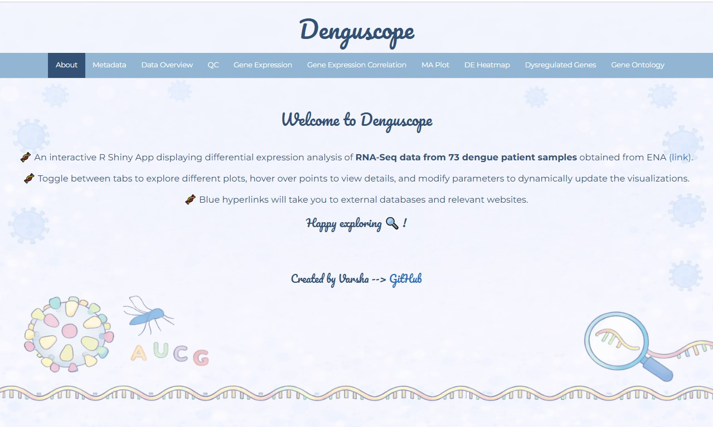
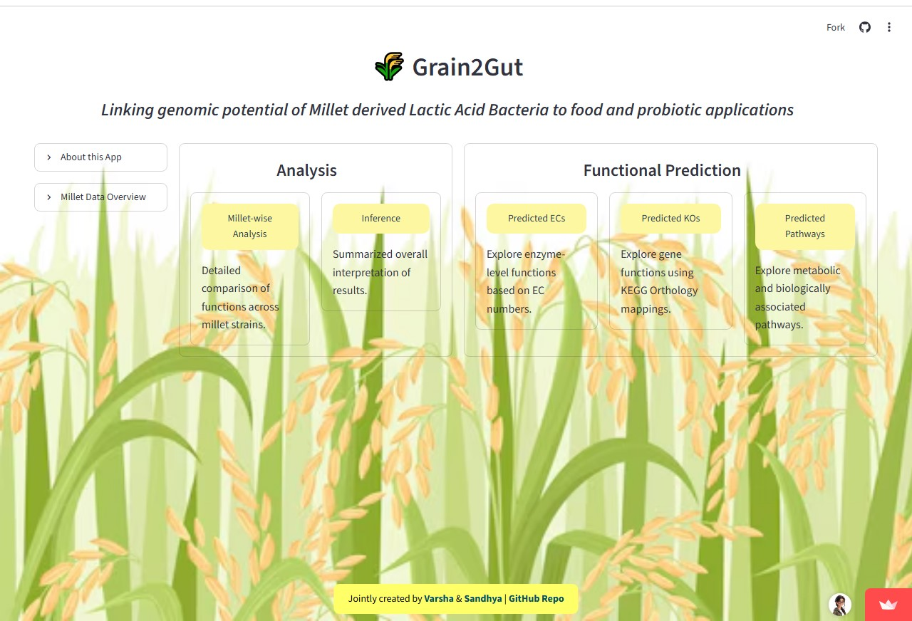

On a journey to build tools for biological discovery.....
Choose your nucleotide

Analyzed RNA-seq data from 73 dengue samples to identify transcriptomic biomarkers and developed a webapp for interactive visualization and exploration of results.

Predicted functional profiles of four millet-derived lactic acid bacteria using 16S rRNA sequences and PICRUSt, and built a webapp for visualization and exploration of results.
Developed a Nextflow pipeline that retrieves protein sequences from UniProt, predicts MHC-I T-cell epitopes using the IEDB API, filters epitopes through BLASTP similarity against human proteins, and prioritizes top epitope candidates.
Solving bioinformatics problems using Python and exploring algorithms in computational biology.
Built a multi-class text classification model using TF-IDF feature extraction and compared LightGBM, XGBoost, and Random Forest models.
Analyzed business data of VHS Designs to predict Non-seasonal ROI, identify potential locations, and generate insights for market expansion.
Developed a pothole detection system using YOLOv8 object detection and LiDAR-based depth estimation with Raspberry Pi and Arduino.
Designed a piezoelectric energy harvesting system using piezo sensors and Arduino to capture energy from vehicle deceleration.
Secured first place, analyzed the CPTAC-LUAD multi-omics dataset, integrating genomic, transcriptomic, and proteomic data to identify potential biomarkers for lung adenocarcinoma.
Designed PD-1-targeting antibody variants, predicted antibody–antigen 3D structures, and analyzed molecular interactions using computational tools.
Co-authored a research paper based on work carried out during the BioHackathon. The publication opportunity was provided by UEM Kolkata and IIT Guwahati to the top-performing teams.
Until the Next Compilation....Bye bye